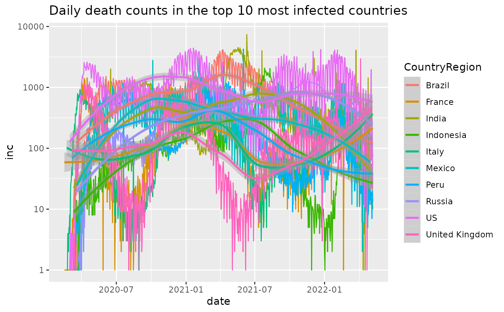

Add daily incidence to cumulative case counts data.frame
Source:R/add_incidence_column.R
add_incidence_column.RdFor a data.frame that includes cumulative case counts over time +/- extra columns for location, etc., this function adds an extra column corresponding to the daily incidence counts.
add_incidence_column(
df,
date_column = "date",
count_column = "count",
incidence_col_name = "inc",
grouping_columns = c()
)Arguments
- df
a data.frame with at least two columns representing a
dateor at least ordered quantity and a cumulativecountcolumn. These types of data often arise from one of the case-count type datasets.- date_column
character(1) giving the column name of date column in the dataset
- count_column
character(1) giving the column name of the cumulative counts in the dataset
- incidence_col_name
character(1) giving the desired column name to add
- grouping_columns
character() vector with the column names to use for grouping when calculating the incidence data. See examples for details. Be very careful to include the appropriate columns in grouping, or results will be misleading.
Value
a data.frame
Details
Multiple datasets conform to the cumulative counts form, with a
date and count column of cumulative cases over time. Other
columns may be present.
This function summarizes by the grouping_columns and then
within each group, subtracts the previous day's counts. The result
is the new case count for each day.
See also
jhu_data(), covidtracker_data(), jhu_us_data() and others for datasets that are appropriate for passing into here.
Examples
library(ggplot2)
library(dplyr)
#>
#> Attaching package: ‘dplyr’
#> The following object is masked from ‘package:MASS’:
#>
#> select
#> The following objects are masked from ‘package:stats’:
#>
#> filter, lag
#> The following objects are masked from ‘package:base’:
#>
#> intersect, setdiff, setequal, union
j = jhu_data()
head(j)
#> # A tibble: 6 × 7
#> ProvinceState CountryRegion Lat Long date count subset
#> <chr> <chr> <dbl> <dbl> <date> <dbl> <chr>
#> 1 NA Afghanistan 33.9 67.7 2020-01-22 0 confirmed
#> 2 NA Afghanistan 33.9 67.7 2020-01-23 0 confirmed
#> 3 NA Afghanistan 33.9 67.7 2020-01-24 0 confirmed
#> 4 NA Afghanistan 33.9 67.7 2020-01-25 0 confirmed
#> 5 NA Afghanistan 33.9 67.7 2020-01-26 0 confirmed
#> 6 NA Afghanistan 33.9 67.7 2020-01-27 0 confirmed
colnames(j)
#> [1] "ProvinceState" "CountryRegion" "Lat" "Long"
#> [5] "date" "count" "subset"
add_incidence_column(j, grouping_columns=c('CountryRegion','ProvinceState'))
#> # A tibble: 610,500 × 8
#> # Groups: CountryRegion, ProvinceState [281]
#> ProvinceState CountryRegion Lat Long date count subset inc
#> <chr> <chr> <dbl> <dbl> <date> <dbl> <chr> <dbl>
#> 1 NA Afghanistan 33.9 67.7 2020-01-22 0 confirmed NA
#> 2 NA Afghanistan 33.9 67.7 2020-01-23 0 confirmed 0
#> 3 NA Afghanistan 33.9 67.7 2020-01-24 0 confirmed 0
#> 4 NA Afghanistan 33.9 67.7 2020-01-25 0 confirmed 0
#> 5 NA Afghanistan 33.9 67.7 2020-01-26 0 confirmed 0
#> 6 NA Afghanistan 33.9 67.7 2020-01-27 0 confirmed 0
#> 7 NA Afghanistan 33.9 67.7 2020-01-28 0 confirmed 0
#> 8 NA Afghanistan 33.9 67.7 2020-01-29 0 confirmed 0
#> 9 NA Afghanistan 33.9 67.7 2020-01-30 0 confirmed 0
#> 10 NA Afghanistan 33.9 67.7 2020-01-31 0 confirmed 0
#> # … with 610,490 more rows
# get top 10 countries by cumulative
# number of cases
j_top_10 = j %>%
filter(subset=='deaths') %>%
dplyr::group_by(CountryRegion) %>%
dplyr::summarize(count = max(count)) %>%
dplyr::arrange(dplyr::desc(count)) %>%
head(10)
j_top_10
#> # A tibble: 10 × 2
#> CountryRegion count
#> <chr> <dbl>
#> 1 US 884260
#> 2 Brazil 627150
#> 3 India 495050
#> 4 Russia 324060
#> 5 Mexico 305893
#> 6 Peru 205505
#> 7 United Kingdom 155698
#> 8 Italy 146149
#> 9 Indonesia 144303
#> 10 Colombia 134079
# The JHU data divides some countries into
# regions, so we can collapse to regions
# by simply summing over date/country
j = j %>% filter(CountryRegion %in% j_top_10[['CountryRegion']] & subset=='deaths') %>%
dplyr::group_by(date, CountryRegion) %>%
dplyr::summarize(count = sum(count))
#> `summarise()` has grouped output by 'date'. You can override using the `.groups` argument.
j
#> # A tibble: 7,400 × 3
#> # Groups: date [740]
#> date CountryRegion count
#> <date> <chr> <dbl>
#> 1 2020-01-22 Brazil 0
#> 2 2020-01-22 Colombia 0
#> 3 2020-01-22 India 0
#> 4 2020-01-22 Indonesia 0
#> 5 2020-01-22 Italy 0
#> 6 2020-01-22 Mexico 0
#> 7 2020-01-22 Peru 0
#> 8 2020-01-22 Russia 0
#> 9 2020-01-22 US 0
#> 10 2020-01-22 United Kingdom 0
#> # … with 7,390 more rows
# Add an incidence column to the cumulative dataset
j_inc = add_incidence_column(j, grouping_columns='CountryRegion')
j_inc
#> # A tibble: 7,400 × 4
#> # Groups: CountryRegion [10]
#> date CountryRegion count inc
#> <date> <chr> <dbl> <dbl>
#> 1 2020-01-22 Brazil 0 NA
#> 2 2020-01-22 Colombia 0 NA
#> 3 2020-01-22 India 0 NA
#> 4 2020-01-22 Indonesia 0 NA
#> 5 2020-01-22 Italy 0 NA
#> 6 2020-01-22 Mexico 0 NA
#> 7 2020-01-22 Peru 0 NA
#> 8 2020-01-22 Russia 0 NA
#> 9 2020-01-22 US 0 NA
#> 10 2020-01-22 United Kingdom 0 NA
#> # … with 7,390 more rows
j_inc %>%
dplyr::filter(count>0) %>%
plot_epicurve(color='CountryRegion', case_column='inc') +
geom_smooth() +
ggtitle('Daily death counts in the top 10 most infected countries')
#> `geom_smooth()` using method = 'loess' and formula 'y ~ x'

# Hospitalizations by day in Maryland
covidtracker_data() %>%
filter(state=='MD') %>%
add_incidence_column(count_column='hospitalized') %>%
ggplot(aes(x=date,y=inc)) + geom_smooth() +
ylab("New Hospitalizations per day") +
ggtitle('Hospitalizations in Maryland', subtitle = 'From covidtracker')
#> Warning: One or more parsing issues, see `problems()` for details
#> `geom_smooth()` using method = 'loess' and formula 'y ~ x'
#> Warning: Removed 22 rows containing non-finite values (stat_smooth).